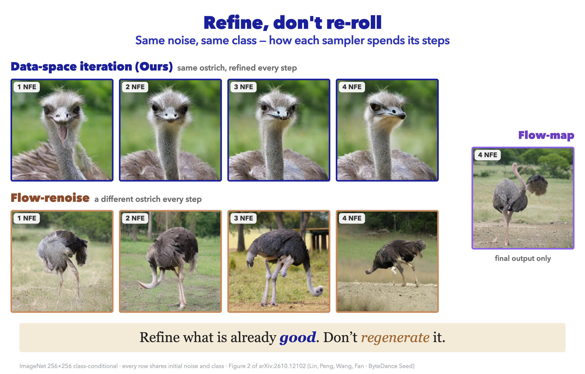
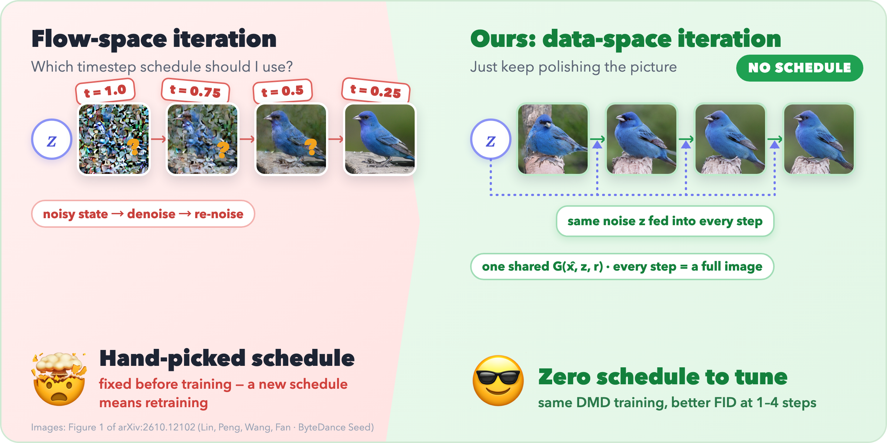
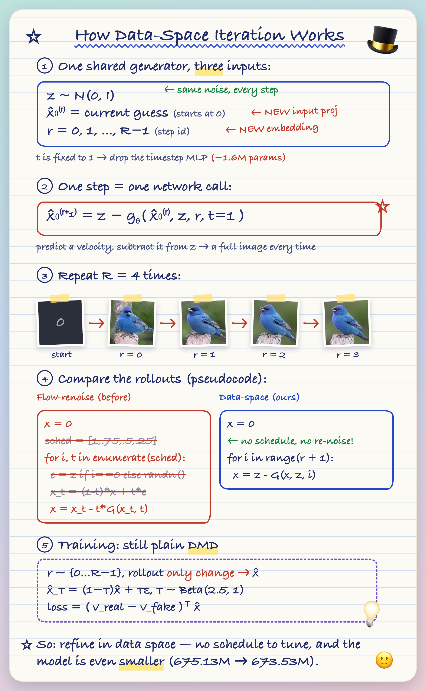
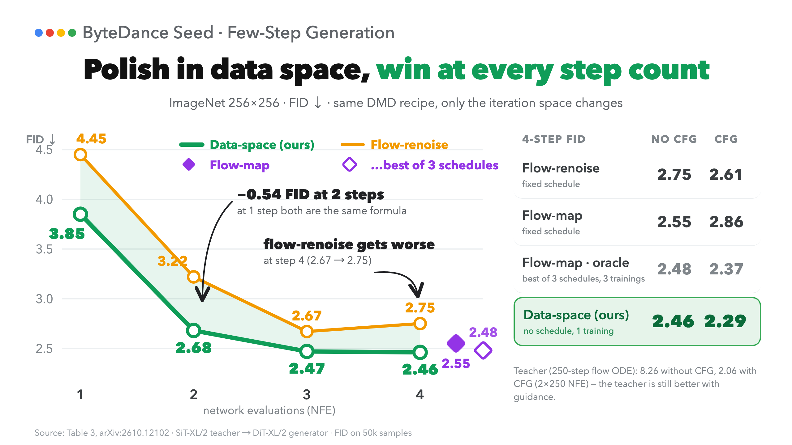
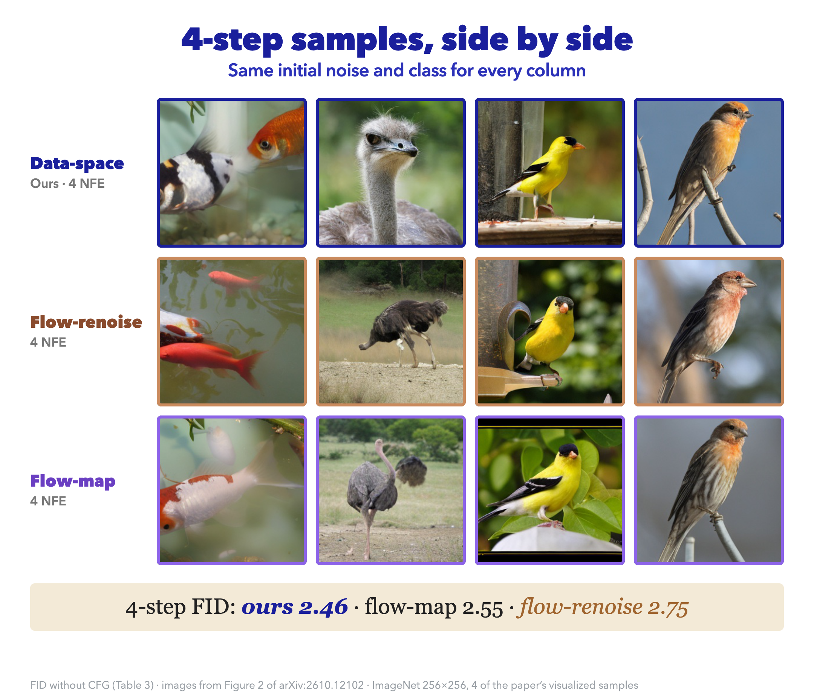

Flow-matching image models need tens to hundreds of network evaluations per sample, so we distill them into generators that need only a few, say four. The usual recipe fixes a timestep schedule, for example the noise levels 1.0, 0.75, 0.5 and 0.25, and lets each step move the sample from one level to the next. The schedule is hard to justify, and changing it means training a new generator.
Our paper asks whether it is needed at all. Instead, each step refines the image prediction directly, starting from the same noise, with no schedule.
1. The idea

Flow matching [6] connects data \(x_0\) and noise \(x_1\) by the line \(x_t=(1-t)x_0+t x_1\), and a network predicts its velocity \(v=x_1-x_0\). Any velocity prediction gives a clean-image prediction:
At \(t=1\) the state is the noise \(z\) itself, so \(\hat x_0=z-v\). Data-space iteration keeps only this prediction as the state and refines it with one shared generator:
- The same noise \(z\) enters every step, not a fresh draw.
- The step index \(r\) tells the generator which stage it is at.
- Nothing is re-noised, so no state at an intermediate noise level is ever built.
The network \(g_\theta\) is the pretrained velocity network with a new input projection for \(\hat x_0^{(r)}\) and an embedding of \(r\), and its flow-time input is fixed to \(t=1\) (for compatibility with the pretrained velocity parameterization).

2. What the schedule costs
Existing methods pass a noisy image from step to step, so they need a schedule \(1=t_0>t_1>\dots>t_R=0\) of noise levels, fixed before training. They differ in how a step moves from \(t_r\) to \(t_{r+1}\):
- Flow-renoise is what multi-step DMD does: predict a clean image \(\hat x_0\), then re-noise it, \(x_{t_{r+1}}=(1-t_{r+1})\hat x_0+t_{r+1}\varepsilon\) with fresh noise \(\varepsilon\). Consistency models follow the same pattern.
- Flow-map methods skip the clean prediction and learn the transition \(x_{t_{r+1}}=G_\theta(x_{t_r},t_r,t_{r+1})\) directly. Phased DMD [4] is the DMD-based example; like Phased Consistency Models [10] for consistency distillation, it distills phase by phase. Its training target needs a different derivation, which my notes on what DMD and Phased DMD estimate[5] cover.
No single schedule is best. We reran both baselines with shifted versions of the uniform grid \([1, 0.75, 0.5, 0.25]\) (Table 2c of our paper [1]): for flow-renoise at 4 NFE, a shift of \(\gamma=2\) is best without guidance and \(\gamma=1\) with guidance. Each candidate costs a full training run.
A worked example: what the generator receives
Take a scalar pixel with a good first-step estimate \(\hat x_0=2.0\) and noise \(z=5.0\). Under flow-renoise at \(t=0.75\), the next input is \(0.25\cdot 2.0+0.75\,\varepsilon\), which is \(-0.4\) for \(\varepsilon=-1.2\) and \(1.4\) for \(\varepsilon=+1.2\): the same estimate arrives as different numbers depending on a random draw. Under data-space iteration the input is always \((\hat x_0, z)=(2.0, 5.0)\).
Re-noising also shrinks the carried-over estimate. For an estimate of unit variance its signal-to-noise ratio (SNR) is \(((1-t)/t)^2\):
| schedule point \(t\) | signal weight \(1-t\) | noise weight \(t\) | SNR of the old estimate |
|---|---|---|---|
| 0.75 | 0.25 | 0.75 | 0.11 |
| 0.50 | 0.50 | 0.50 | 1.00 |
| 0.25 | 0.75 | 0.25 | 9.00 |
So re-noising can make already-good content hard to keep. This is a calculation about the generator's input, not evidence that trained generators behave this way; the evidence is in Section 5.
3. Training
We train with distribution matching distillation (DMD) [2][3], replacing only the rollout by (2). DMD matches the distribution of generator outputs to the teacher's using two flow models: a frozen real model (the teacher, SiT-XL/2 [7]) and a fake model trained on the generator's own samples. The generator, a DiT-XL/2 network [8], is pushed towards where the teacher would denoise its output and away from where the fake model would. Multi-step training also needs self-rollout: to train step \(r\), run the first \(r\) steps without gradients, then take step \(r\) with gradients, so the generator trains on its own intermediate states.
The DMD loss and training code
Noise a generator output \(\hat x\) at a random level \(\tau\), \(\hat x_\tau=(1-\tau)\hat x+\tau\varepsilon\) with \(\varepsilon\sim\mathcal N(0,I)\), and compare the two models there. With weighting \(w(\tau)\) and stop-gradient \(\mathrm{sg}\), the generator loss is
By (1) at level \(\tau\), \(v_{\text{real}} - v_{\text{fake}} = -\tfrac{1}{\tau}(\hat x_0^{\text{real}} - \hat x_0^{\text{fake}})\), which is the direction stated above. The fake model is trained alternately by regressing \(v_{\text{fake}}(\hat x_\tau,\tau)\) onto \(\varepsilon-\hat x\). The code is adapted from Algorithm 1 in the appendix of our paper [1]; z, x are latent batches of shape (B, 4, 32, 32), and r is the sampled step index.
def rollout_data_space(gen, z, c, r, track_grad):
x_hat = torch.zeros_like(z)
for i in range(r + 1):
with torch.set_grad_enabled(track_grad and i == r): # gradients only at step r
x_hat = z - gen(x_hat, z, c, i) # eq. (3)
return x_hat
def dmd_step(gen, v_real, v_fake, data, r, rollout_fn, gen_step=True):
x, c = data
z, eps = torch.randn_like(x), torch.randn_like(x)
tau = torch.distributions.Beta(2.5, 1.0).sample((x.shape[0],)).to(x.device)
tau4 = tau[:, None, None, None]
x_hat = rollout_fn(gen, z, c, r, track_grad=gen_step)
x_tau = (1 - tau4) * x_hat + tau4 * eps # noise the prediction
if not gen_step: # fake-model update
return F.mse_loss(v_fake(x_tau, tau, c, r), eps - x_hat)
with torch.no_grad(): # fixed direction, no gradient
direction = v_real(x_tau, tau, c) - v_fake(x_tau, tau, c, r)
return (x_hat * direction).mean() # eq. (4) with w(tau)=1In a generator step, gradients flow only through x_hat from the last of the \(r+1\) generator calls, and the direction \(v_{\text{real}}-v_{\text{fake}}\) carries none. The flow-renoise baseline uses the same dmd_step and differs only in the rollout loop: at each schedule point \(t\) it re-noises \(\hat x\) and calls the generator with \(t\) instead of \(r\). Other hyperparameters are in the appendix of our paper.
4. Results
We compare all samplers on class-conditional ImageNet 256×256 with the same teacher and DMD recipe, so only the iteration differs. FID (Fréchet Inception Distance) is lower for better samples. Baselines use the uniform schedule, and "oracle" is the best of three schedules for flow-map.

- Data-space iteration has the lowest FID at every step count, with and without guidance, and needs no schedule search. Flow-renoise gets worse from 3 to 4 steps; ours keeps improving or stays level.
- At 4 NFE it matches or beats the oracle flow-map: 2.46 against 2.48 without guidance (parity, std < 0.05 over three runs) and 2.29 against 2.37 with guidance.
- One caveat. At 1 NFE data-space iteration and flow-renoise compute the same function, so that gap comes from optimization, which we attribute to training dynamics. Perhaps iterating on the image prediction makes different step counts more compatible with each other when they are trained together, but this is a hypothesis we have not tested.
Full FID tables
Without classifier-free guidance
| Method | 1 NFE | 2 NFE | 3 NFE | 4 NFE |
|---|---|---|---|---|
| Flow matching teacher (250 NFE) | 8.26 | |||
| DMD, flow-renoise | 4.45 | 3.22 | 2.67 | 2.75 |
| Phased DMD, flow-map | – | – | – | 2.55 (oracle 2.48) |
| Data-space DMD | 3.85 | 2.68 | 2.47 | 2.46 |
With classifier-free guidance
| Method | 1 NFE | 2 NFE | 3 NFE | 4 NFE |
|---|---|---|---|---|
| Flow matching teacher (250 × 2 NFE) | 2.06 | |||
| DMD, flow-renoise | 4.02 | 2.89 | 2.51 | 2.61 |
| Phased DMD, flow-map | – | – | – | 2.86 (oracle 2.37) |
| Data-space DMD | 3.31 | 2.47 | 2.33 | 2.29 |
5. What the steps look like
FID scores only the final image, so Figure 1 at the top shows the output of every step. Data-space iteration keeps the composition from the first step and sharpens details afterwards; flow-renoise changes pose, background and viewpoint between steps. The evidence that structure persists is qualitative. Measured as mean pixel-space L2 change between consecutive steps, data-space iteration changes about 28% less in the first transition but about 20% more in the last, so "changes less everywhere" is not what the numbers say.

6. Limits and related ideas
- The saving is in training, not sampling. All three samplers use up to four evaluations at inference; data-space iteration removes the schedule search. We report no extra computation or memory over a matched DMD baseline and did not measure wall-clock time.
- Self-rollout training is required. That is free if the distillation recipe already uses it, and a disadvantage otherwise.
- The evaluation is narrow. Our main experiments are class-conditional ImageNet 256×256 with FID. On unconditional CIFAR-10 the method beats DMD at 2–4 NFE but is worse at 1 NFE (12.20 against 11.21). Text-to-image and other modalities are future work, as is efficient training for ODE-based distillation objectives with paired data and noise.
Related ideas
- Self-conditioning feeds previous predictions into a model to improve its velocity field, but generation still integrates that field along an ODE. In our method the data prediction itself is the iterated state.
- Fixed-point and deep equilibrium models [9] apply one function repeatedly. Our generator is conditioned on \(r\), so its update can differ across steps, and we apply the DMD objective at every step without requiring convergence.
- Looped transformers reuse shared blocks to increase effective depth. Recent work trains one end to end with a distribution-matching objective and backpropagates through the whole unrolled loop, which is costly. We backpropagate through only the last step of the rollout, which makes data-space iteration a drop-in change to existing DMD pipelines.
If the generator is trained on its own rollouts, nothing requires those rollouts to pass through noisy states. Dropping the schedule removes one hyperparameter and, in our controlled setting, matches or beats the tuned baselines. Text-to-image models and streaming video generation, where self-rollout is already central, remain to be tested.
References
- [1]
- [2]
- [3]
- [4]
- [5]
- [6]
- [7]
- [8]
- [9]
- [10]
Citation
If you find this work useful, please cite our paper (arXiv:2610.12102):
@article{lin2026fewstep,
title = {Few-Step Generation via Data-Space Iteration},
author = {Lin, Shanchuan and Peng, Yansong and Wang, Fu-Yun and Fan, Haoqi},
journal = {arXiv preprint arXiv:2610.12102},
year = {2026}
}